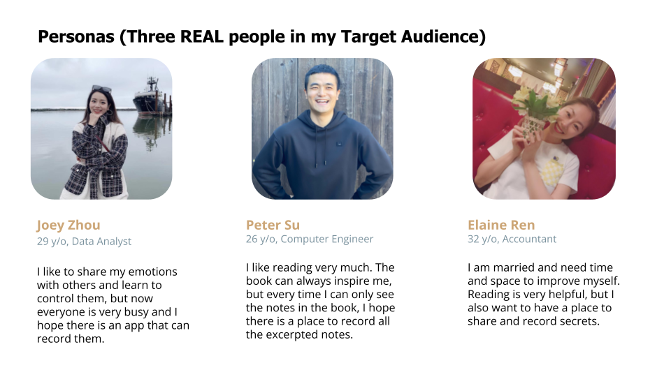
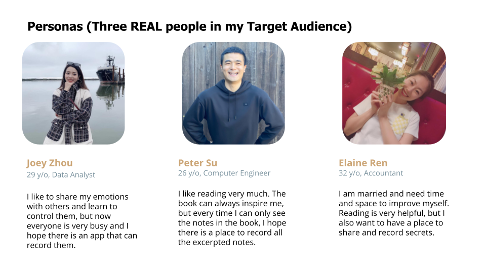

EmoCatcher is an app that tracks and records users’ emotional changes by recording their posts on social media. Thereby reducing anxiety in life, and replenishing energy to restore confidence and hope.
 
